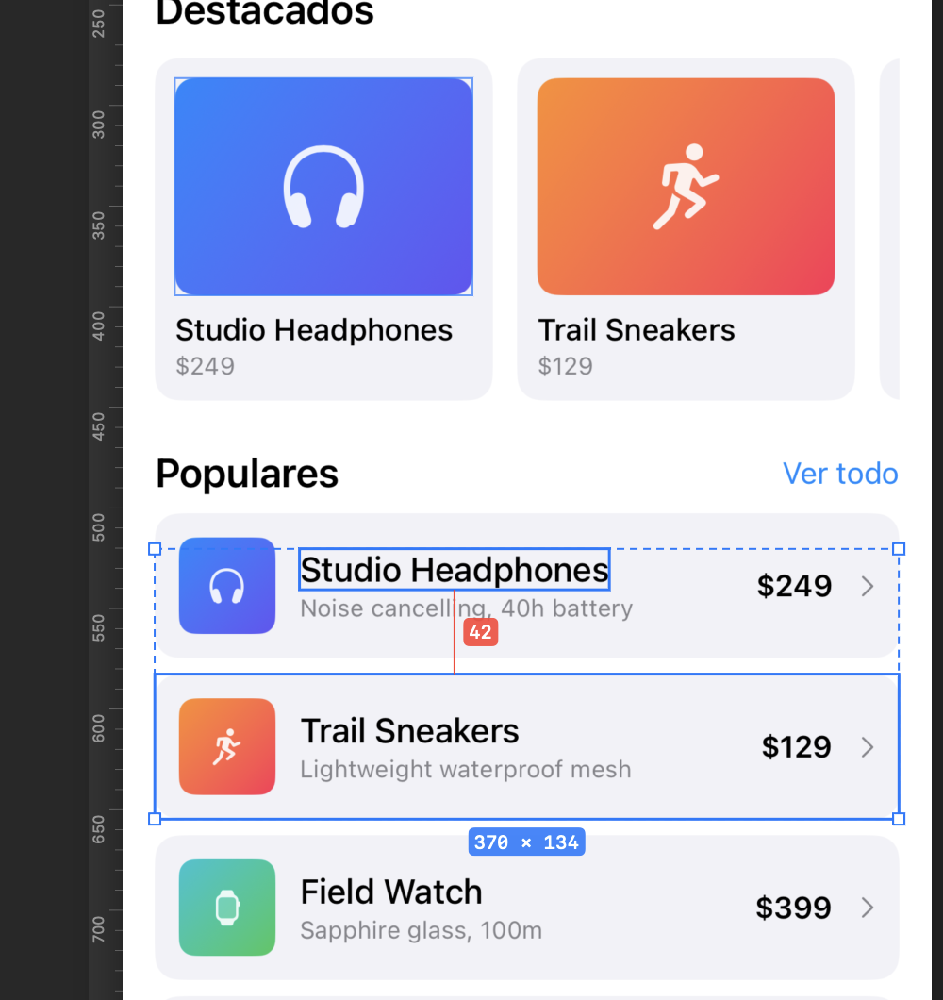
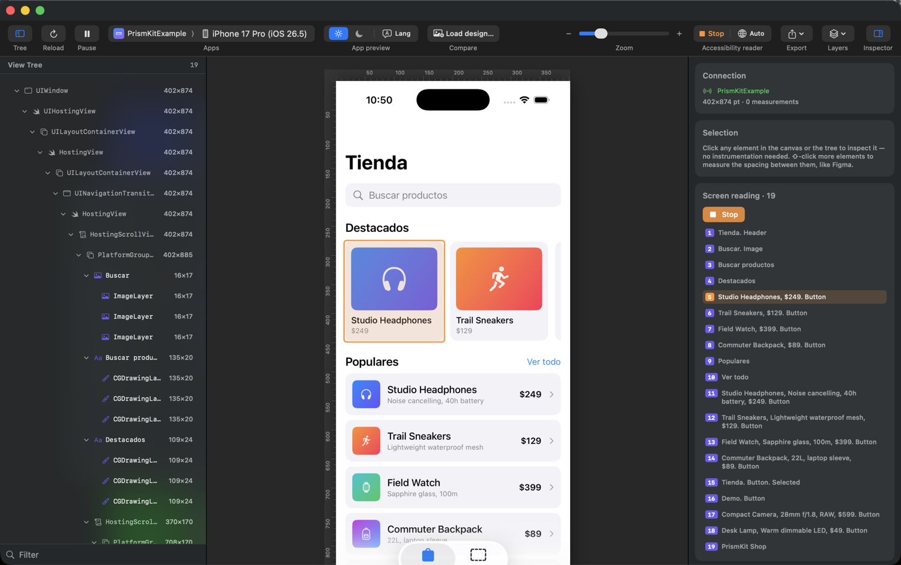
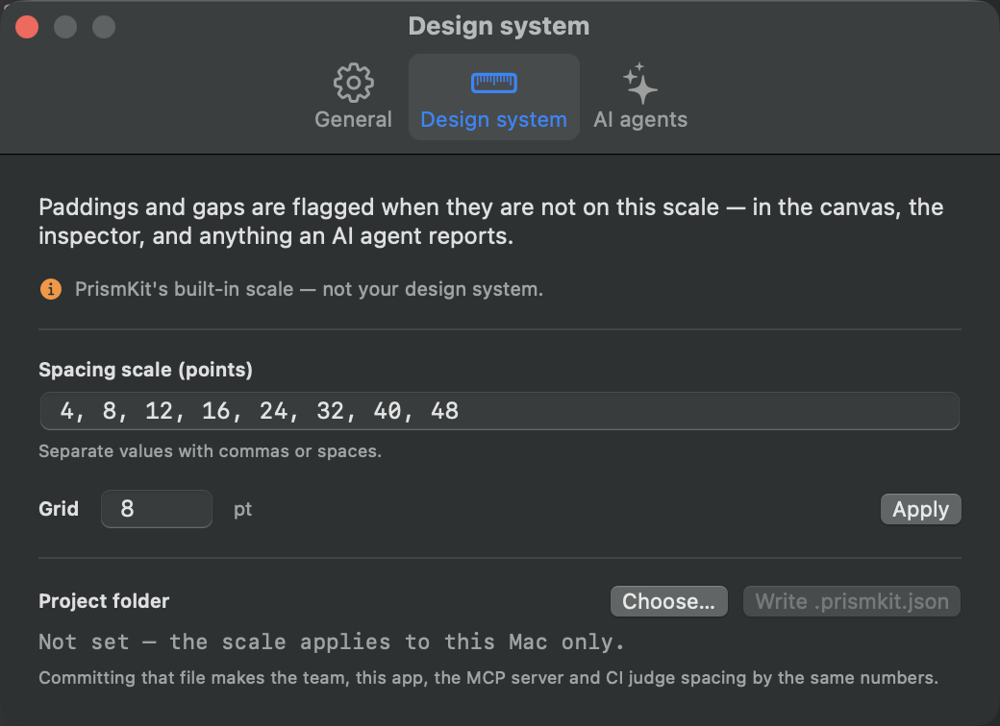
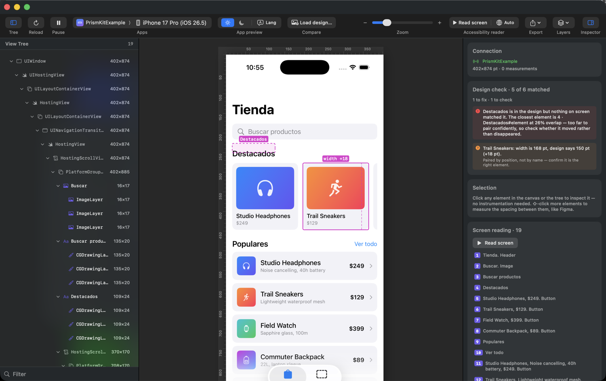
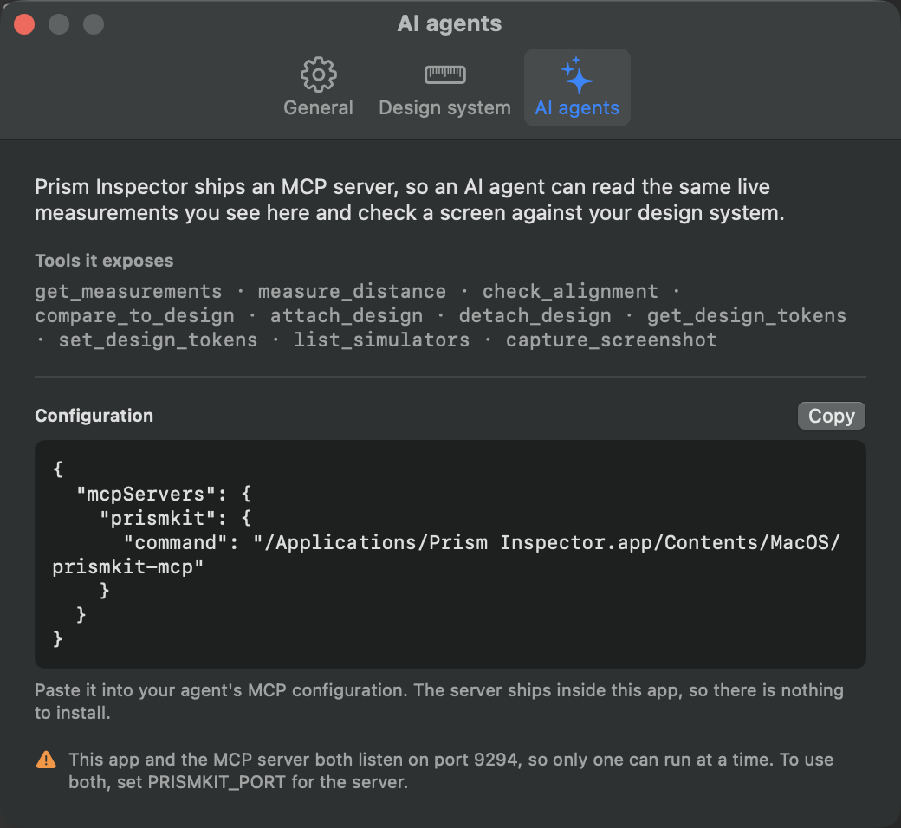

Docs
How to use Prism Inspector, instrument an app with the PrismKit SDK, and drive both from an AI agent. Every screenshot here is the tool running against a real app.
How it fits together
There are three pieces, and only the first is required:
- Prism Inspector — the Mac app. It reads a running simulator through
simctland the accessibility tree, so it works against an app you have never touched. - PrismKit — an optional Swift package you add to your app. It reports
the components you name, so readings say
productRowinstead ofCGDrawingLayer, and padding becomes measurable as padding. - The MCP server — ships inside the app bundle. It hands the same measurements to an AI agent.
When the SDK is present it streams over a local socket on port 9294. When it is not, the app falls back to what the accessibility tree exposes. Everything else — measuring, guides, the design check, export — works either way.
Install
Download the disk image and drag Prism Inspector into Applications in the Finder.
Dragging in the Finder is not cosmetic advice. An app copied by any other means keeps the quarantine flag macOS puts on downloads, and macOS then runs it from a randomised read-only folder — App Translocation. The app works, but it can never update itself, and the only symptom is a message about running "from the location it was downloaded to".
On first launch macOS asks you to confirm, because the app came from the internet. The prompt also says Apple checked it and found no malware — that is notarization, and it is the expected path. An app that was not notarized says something different: that it is damaged and cannot be opened.
Requires macOS 13 or later. The app is a universal binary — Apple silicon and Intel — and so is the MCP server inside it, so the agent integration works on both. Free.
Connect to your app
Your app has to carry the SDK. The inspector renders what the app streams to it, so an app without PrismKit shows nothing at all — not an empty tree, but no screen either, because capture only runs while something is streaming. Two lines get you there.
Add the package, in Xcode through File ▸ Add Package Dependencies… or in a
Package.swift:
.package(url: "https://github.com/zalazara/PrismKit-SDK.git", from: "0.2.0")
Then put one modifier at the root of your view hierarchy — above your
NavigationStack or TabView, so every screen you push is covered
by the same scope:
import PrismKit
var body: some Scene {
WindowGroup {
ContentView()
.measureScope()
}
}
That is the whole integration. Individual views do not need annotating: everything in the
view tree comes from the accessibility tree, so a screen you never touched still reports
its elements. Adding measure to specific views is
worthwhile later, for naming components and for design checks that pair by identity, but
nothing requires it.
It compiles out of release builds entirely — the collection, overlay and streaming code is
not in the shipping binary — so it does not need wrapping in #if DEBUG.
Now boot a simulator, run the app from Xcode or with xcrun simctl launch, and
open Prism Inspector. It finds the running app, mirrors its screen, and fills the view tree.
Order does not matter. Start either one first; the connection retries every few seconds, so an app launched before the inspector still appears. If the app is there but the view tree is empty, the simulator has not built its accessibility tree — see Troubleshooting.
The toolbar's breadcrumb shows which app and which simulator you are looking at, with the app's real icon. If several simulators are booted, pick one there.
What works if your app has UIKit screens
Prism Inspector is built for SwiftUI, but the view tree does not come from SwiftUI — it
comes from the accessibility tree, walked from your app's key window. So in a mixed app,
UIKit screens are measured too, with correct geometry and text, as long as
a measureScope is mounted somewhere in the app. You do not have to be on a
SwiftUI screen for it to work.
Two limits are worth knowing before you rely on it:
-
A pure UIKit app has nowhere to start.
measureScopeis a SwiftUI modifier, so an app with no SwiftUI in it cannot stream at all. Mixed apps are fine; UIKit-only ones are not supported yet. -
UIKit views cannot be paired by identity in a design check.
accessibilityIdentifierset on a UIView does not reach the snapshot — a known defect, not something your code can work around — and UIKit has nomeasureequivalent to fall back on. Design checks against UIKit screens therefore pair by copy and geometry, which works but produces findings worth verifying before acting on. Everything else — selection, measuring, the layers, the accessibility reader — behaves the same.
The canvas
The canvas starts clean on purpose — no boxes, no labels — and behaves like a design tool.
- Click any element to select it. You get its size badge and handles.
- ⌥-click a second element to measure between them. You get the gap per axis, or the four insets when one contains the other.
- ⇧-click to add more elements to the selection; the combined bounding box and the pairwise gaps are shown.
- ⌥-hover to measure without committing to a second selection.
- Esc clears the selection.

Layers
The Layers menu in the toolbar turns on the QA overlays, all off by default: bounds, size labels, internal padding, external spacing, grid, safe area, layout columns, concentric corner guides, rulers, and the design check.
Rulers and guides
Rulers run along the top and left. Drag out of a ruler to create a guide;
drag one off the canvas or double-click it to remove it, or clear them all with
⌥⌘;.
Zoom, pause and crop
Pinch on a trackpad, use the toolbar slider, or ⌘+ / ⌘− /
⌘0. Pause (⌘P) freezes the preview on the current
frame while selection, measuring and size edits keep working — useful for a screen that
animates while you are trying to read it. Crop to scope in the Layers menu
trims the preview to the region under your measurement scope.
The view tree
The left panel lists what is on screen with each element's size. Selecting there selects on the canvas and vice versa. The filter box at the bottom narrows by name.
Without the SDK the names come from UIKit's own classes —
UIHostingView, CGDrawingLayer — which tells you the shape of the
hierarchy but not what anything is. That is what the SDK
changes.
The inspector
The right panel reports, for the current selection:
- Frame — position and size in points.
- Internal padding — the four edges between a container and its content, validated against your scale. Zero edges are hidden.
- Edge distances — from the element to the bounds of its scope.
- External spacing — the gap to another selected element, per axis.
Editing sizes live
The W and H fields push a size override back into the running app, which re-lays-out for real — not a drawing on top of a screenshot. An Align menu positions the original content inside the new frame.
Live editing only works on views the SDK wraps, because there has to be something in the app to apply the override to. Arbitrary SwiftUI has no runtime object graph to edit from outside, and text and colour cannot be changed at all — a preview-only fake was built once and removed, because overlaying invented text on a screenshot is a lie about what the app does.
Accessibility reader
Read screen plays the screen back in the order VoiceOver would announce it, speaking each element and outlining it on the canvas as it goes. With something selected the button becomes Read selection.

Trait words — "Button", "Header", "Selected" — are appended from the traits SwiftUI already set, so what you hear is what a real user hears rather than what someone remembered to write. The globe menu picks the reading language independently of the interface language.
iOS builds no accessibility tree until the system accessibility flag is on. Until you enable it, the reader has nothing to read and the list is empty. The app has a button that sets it for the selected simulator; the app under test has to be relaunched afterwards. Geometry — sizes, spacing, the tree — works regardless.
Your spacing scale
Paddings and gaps are flagged when they are not on your scale, with the nearest token as the
hint: 42→40. Out of the box this judges against PrismKit's built-in scale,
which is not your design system — the pane says so.

Type your scale, set the grid, and press Apply. That saves it for this Mac. To share it, point Project folder at your repository and press Write .prismkit.json:
{
"spacing": [4, 8, 12, 16, 24, 32, 40, 48, 64],
"grid": 8
}Commit that file and the app, the MCP server and everything an agent reports judge spacing by the same numbers. Resolution order is: the project file, then this Mac's setting, then the built-in scale.
Compare with a design
Two different things share this name, and they answer different questions.
The design check — numbers
Attach a design and every node is matched against what rendered, then reported as moved, wrong size, missing, or off-token. Expected positions are drawn onto the canvas next to where the element actually landed.

A design is a plain JSON document — deliberately not Figma-specific. A Figma node, a Pencil document or an agent's own description all arrive in the same shape:
{
"source": "Figma",
"reference": "Shop / Home — v4",
"frame": { "width": 402, "height": 874 },
"origin": "safeArea",
"nodes": [
{
"id": "node-1",
"name": "Featured card",
"match": "featuredCard",
"frame": { "x": 16, "y": 300, "width": 168, "height": 170 },
"text": "Studio Headphones"
}
]
}Two of those fields decide whether the report is something you can act on.
match is the name the app knows the view by. Set it and pairing is an
identity rather than a guess, and every difference under that node inherits that
certainty. Leave it out and the comparator falls back to identical copy, then to
overlapping rectangles — which works, and produces findings you have to verify
before believing. The name it looks for is a measure group; a SwiftUI
accessibilityIdentifier is not enough on its own, because SwiftUI
does not surface it to the runtime element the snapshot reads.
origin says what the frame’s top-left corner is measured from —
"safeArea" for an ordinary screen drawn below the status bar,
"screen" (the default) for content that runs to the glass.
Load it with Load design… in the toolbar, or have an agent attach it with
attach_design — they are the same document, so the agent's work and yours are
the same session.
When a node matches nothing, the report also names the nearest unclaimed element and its overlap. "It moved" and "it disappeared" look identical to a comparison that pairs by position, and only one of them is the bug you are chasing.
The mockup comparison — eyes
Compare in the toolbar takes an image instead, and puts it side by side with the running app, overlaid at an adjustable opacity, or behind a wipe slider. Guides are mirrored across both halves, so a guide you drag on the design lands in the same place on the app.
From Figma or Pencil to a design file
The comparator takes the neutral shape above, so getting a design in means translating from whatever tool drew it. There are two things you have to state, and one that is handled for you.
What you must translate: canvas coordinates
Design tools report positions in canvas coordinates — where the frame happens to
sit on an infinite board, so a screen might start at x: 4820. The comparator
expects node frames relative to the design frame’s own top-left corner.
So subtract the frame's origin from every node: a node at canvas x: 4836 inside
a frame at x: 4820 becomes x: 16.
What you must state: where that corner sits on the device
A design frame’s numbers mean nothing until you say what they are measured from.
y: 24 is the safe area on a phone with a Dynamic Island and the glass on a
phone without one — the same number, two different places. Say which with
origin and the inset the running device reports is added for you, so one
design frame holds on every phone instead of being redrawn for each.
Anchor it wrong and the whole screen sits at a constant offset. That is reported once, as
screenOffset, with the remaining differences measured with it removed —
one mistake reads as one finding rather than as forty. The detection is deliberately
strict: a layout bug high on a screen also pushes everything below it, but by amounts that
scatter, so that stays reported element by element.
What is handled for you: the scale
You do not need to redraw the design at the device's size. The comparison
scales by width — a 390 pt design checked against a 402 pt screen is multiplied by
402 / 390 — and the report says which factor it used.
Because the factor comes from the width alone, a design whose aspect ratio differs from the device drifts vertically the further down the screen you look. If your design frame is a different shape than the device, expect the bottom of the screen to report offsets that are the aspect ratio talking, not the layout.
Figma, via the REST API
Take the two ids out of the frame's URL. In
figma.com/design/FILE_KEY/Name?node-id=1-234
the file key is the path segment, and the node id becomes 1:234 — the API wants
a colon where the URL has a dash. Get a personal access token from Figma ▸ Settings ▸
Security.
import json, os, urllib.request
FILE_KEY = "abc123…"
NODE_ID = "1:234" # the frame, colon not dash
TOKEN = os.environ["FIGMA_TOKEN"]
request = urllib.request.Request(
f"https://api.figma.com/v1/files/{FILE_KEY}/nodes?ids={NODE_ID}",
headers={"X-Figma-Token": TOKEN},
)
root = json.load(urllib.request.urlopen(request))["nodes"][NODE_ID]["document"]
origin = root["absoluteBoundingBox"]
nodes = []
def walk(node):
box = node.get("absoluteBoundingBox")
# Hidden layers still carry a box; they are not on screen, so they would
# be reported as missing from a screen that is behaving correctly.
if box and node.get("visible", True):
entry = {
"id": node["id"],
"name": node.get("name"),
"frame": {
"x": round(box["x"] - origin["x"], 1), # canvas → screen
"y": round(box["y"] - origin["y"], 1),
"width": round(box["width"], 1),
"height": round(box["height"], 1),
},
}
if node.get("type") == "TEXT":
entry["text"] = node["characters"]
nodes.append(entry)
for child in node.get("children", []):
walk(child)
for child in root.get("children", []):
walk(child)
print(json.dumps({
"source": "Figma",
"reference": root.get("name"),
"frame": {"width": origin["width"], "height": origin["height"]},
"nodes": nodes,
}, indent=2))
Run that on a real screen and you will get several hundred nodes, because every vector and
every auto-layout wrapper has a bounding box. Prune it. A design worth
checking against is the elements you would actually review — the cards, the rows, the
headings — not every shape that makes them. Filter by type (drop
VECTOR, LINE, ELLIPSE), or keep only nodes whose name
you deliberately set rather than the ones Figma named Rectangle 41.
Pencil
Pencil is driven through execute, which evaluates a small JavaScript snippet
against the open document. Get walks a subtree and hands each node to a
visitor; Print adds a line to the response. So instead of pulling the whole
tree and pruning it, you ask for exactly the columns you need:
Get("FRAME_ID", (n, c) => Print([
n.name,
Math.round(c.bounds.x), Math.round(c.bounds.y),
Math.round(c.bounds.width), Math.round(c.bounds.height),
n.content ?? ""
].join(" | ")))
ctx.bounds resolves in the parent’s coordinate space, so walk the
parentCtx chain to accumulate an absolute position, then subtract the frame’s
own origin — the same subtraction as above. Call
get_app_state first: it lists the top-level frames with their ids, and with
include_schema it returns the document schema and the full execute
API.
Name your layers after the measure groups in the app and the translation
becomes mechanical: the layer name is the node’s match, and every finding
comes back paired by identity.
Two things will otherwise cost you an afternoon. The MCP server has to be started with
--agent; with --app desktop alone every call fails with
“you are probably referencing the wrong .pen file”, which reads like a
problem with your document. And the first call on a fresh connection hangs for about a
minute while the agent name registers, then fails — the immediate retry answers in
well under a second. Earlier builds exposed snapshot_layout and
batch_get; 1.2 folds both into execute.
Or let the agent do it
This is the shortest path, and the reason the format is neutral in the first place. Give your agent both MCP servers — the design tool's and this one — and the translation is a step it can take on its own:
“Read frame 1:234 from that Figma file, convert the cards and rows to
PrismKit's design shape with coordinates relative to the frame, attach it, then tell me what
does not match on the screen currently running.”
The agent calls attach_design and then compare_to_design, and
because the attachment is shared, the same design appears drawn on your canvas while it
works.
Check it against the example design
Before pointing this at your own screens, watch it work on one where the answer is already
known. The SDK repository ships Example.pen — a six-frame Pencil document
holding five screens and the design system behind them — and
Example/PrismKitExample, that design built in SwiftUI. The app drifts from the
design in seven measured places, on purpose.
All seven are listed in Example/DESIGN-DEMO.md with the finding each one should
produce. That list is the point: run the check and compare against it. A finding that is not
on the list, or a row on the list with no finding, is worth chasing. It is the difference
between a demo you watch and a test that can fail.
-
Open
Example.penin Pencil, and boot a simulator 393 pt wide (iPhone 15 Pro). Matching the design’s width keeps the scale at exactly 1, so every number you read is the layout rather than the rescaling. -
Run the example app with
-autopush checkout, which opens the screen whose defects are the most legible. If the view tree comes back empty, see the accessibility list is empty. -
Ask your agent to read
screen-checkout, translate it, attach it, and compare withtolerance: 6.
You should get seven findings on that screen: a button 8 pt short and the caption that moved because of it, two copy differences — one of which is not a bug, a delivery date the app computes and the mock could only guess — and the residue of two text engines measuring the same string differently.
That last part is why tolerance exists. A design tool and CoreText disagree by a
point or two on every line of text, and those differences accumulate down a screen. Six
points clears the disagreement while still catching an eight-point mistake; zero would report
a perfect screen as broken.
Sessions and export
⌘E exports the canvas exactly as you see it — screenshot, active layers, selection readouts, rulers and guides — at native device scale. It is meant as QA evidence you can paste into a ticket.
⌘S saves a session: the snapshot and the screenshot in one file. ⌘O opens one later with no simulator and no app running, and selection, measuring, the accessibility list, export and local size edits all still work.
Why add the SDK
Everything above works on an app you have not modified. The SDK buys four things:
- Names.
productRowinstead ofCGDrawingLayer, in the tree, the inspector and anything an agent reports. - Padding as padding. The accessibility tree exposes frames; it does not say which box is a container and which is its content. Marking that relationship is what turns a gap into an internal padding measurement.
- Live size editing, which needs something in the app to apply the override to.
- An in-app overlay for testing on a physical device, where there is no Mac app in the loop.
Install and instrument
dependencies: [
.package(url: "https://github.com/zalazara/PrismKit-SDK.git", from: "0.2.0")
]Mark a scope once, near the root of the screen you are working on:
import PrismKit
struct ShopScreen: View {
var body: some View {
NavigationStack { content }
.measureScope()
}
}Then name the components you care about:
ProductRow(item: item)
.measure("productRow", role: .container)
Text(item.title)
.measure("productRow", role: .title)Two measurements sharing a group name form one component: reporting the container and its content under the same group is what lets the inspector show the padding between them.
Put the scope at the root and it follows navigation — whichever screen is visible is the one
that reports. Covered screens stay mounted in a NavigationStack, so PrismKit
gates on appearance rather than on existence.
API reference
measureScope
func measureScope(
enabled: Bool = true,
configuration: MeasureConfiguration = .default,
selection: Bool = false,
toolbar: MeasureToolbarVisibility = .automatic,
streaming: Bool = true
) -> some View| Parameter | What it does |
|---|---|
enabled | Turns collection on for the whole subtree. Nothing is collected when off. |
configuration | Which overlays draw, the grid size, and the spacing tokens to validate against. |
selection | Starts in selection mode. While active the overlay intercepts touches on measured elements. |
toolbar | .automatic shows the floating toolbar on device and hides it while the Mac app is connected. .visible / .hidden override. |
streaming | Streams to the Mac app. A silent no-op when nothing is listening, so leaving it on costs nothing. |
measure
func measure(
_ group: String,
role: MeasurementRole = .container,
metadata: [String: String] = [:]
) -> some View
Roles: .container, .content, .title,
.subtitle, .icon, .image, .background,
and .custom("…").
MeasureConfiguration
gridSize, spacingTokens, and the layer toggles
showsGrid, showsSafeArea, showsBounds,
showsSizeLabels, showsInternalPadding,
showsExternalSpacing, validatesTokens. The floating toolbar can
change them at runtime.
It works in Xcode previews as well as in the simulator.
What ships in a release build
Nothing. That is the point, and it is checkable rather than promised.
The measurement collection, the overlay, the accessibility walk and the network client all
sit behind #if DEBUG. In a release build measureScope and
measure return the view unchanged, no socket is opened, and the networking code
is not in the binary at all — verified against a real consumer's release build, where
148,000 Network-framework symbol references became zero.
The package's own CI runs its test suite in both debug and release, because a guarantee that only holds in the configuration you test is not a guarantee.
The MCP server
prismkit-mcp speaks the Model Context Protocol over stdio and ships
inside the app bundle — someone who downloads the app has no Swift package
checked out anywhere, so a server living outside it would exist only for people who built
the app themselves.

{
"mcpServers": {
"prismkit": {
"command": "/Applications/Prism Inspector.app/Contents/MacOS/prismkit-mcp"
}
}
}
The app and the server both listen on port 9294, so only one can run at a
time. Quit the app while an agent is working, or set PRISMKIT_PORT for
the server and point the SDK at the same port to run both.
Tools
| Tool | Arguments | Returns |
|---|---|---|
get_measurements | — | Everything on the current screen: instrumented elements and accessibility-derived ones, with ids, groups, roles, frames, padding and spoken descriptions. |
measure_distance | first_id, second_id |
Per-axis gaps between two elements, or the four insets when one contains the other. Ids come from get_measurements. |
check_alignment | tolerance |
Which edges align exactly, which nearly align within the tolerance, and which paddings are off the spacing scale. |
attach_design | design |
Keeps a design attached to the session so it need not be resent while you navigate. The app draws it too. |
compare_to_design | design, tolerance, compare_text, minimum_overlap |
Per-node differences in position, size and wording. |
detach_design | — | Forgets it; the app stops drawing it. |
get_design_tokens | — | The spacing scale every judgement uses, and where it was resolved from. |
set_design_tokens | spacing_tokens, grid_size, project_path |
Sets the scale. With project_path it writes a committable .prismkit.json. |
list_simulators | — | Booted simulators: name, UDID, runtime. |
capture_screenshot | udid | A PNG of the simulator screen. |
compare_to_design defaults to not comparing text, because a
running app shows real data where a design shows placeholders, and reporting that as a
defect trains people to ignore the report.
A worked example
What a review loop looks like from the agent's side:
- Set the team's scale once, and commit it:
set_design_tokens( spacing_tokens: [4, 8, 12, 16, 24, 32, 40, 48], grid_size: 8, project_path: "/Users/you/Projects/Shop" ) - Attach the design being built against — a Figma node the agent has read, exported into
the neutral shape:
attach_design(design: { "frame": …, "nodes": [ … ] }) - Navigate the app, then ask for the differences. Repeat after each fix without resending
the design:
compare_to_design(tolerance: 2) check_alignment(tolerance: 2) - Open Prism Inspector to look at what it found — the same attachment, drawn on the canvas.
Keyboard shortcuts
| Key | Action |
|---|---|
Esc | Clear the selection |
⌘+ / ⌘− / ⌘0 | Zoom in, out, reset |
⌘R | Reload the capture |
⌘P | Pause / resume the preview |
⌘E | Export the canvas as PNG |
⌘S / ⌘O | Save / open a session |
⇧⌘R | Rulers |
⌥⌘; | Clear all guides |
⌥⌘1 / ⌥⌘2 | View tree / inspector |
⌘, | Settings |
⌘? | Help |
Updates
Prism Inspector ▸ Check for Updates… Updates are signed with a key that never leaves the release machine, and the app refuses any download whose signature does not match — controlling the download server is not enough to push a tampered build.
If it says the app cannot be updated from where it is running, the app is translocated: see Install.
Troubleshooting
No app appears
Check a simulator is booted and the app is in the foreground. If you are using the SDK, confirm the scope is on a screen that is actually visible — a scope inside a covered navigation destination reports nothing by design.
The accessibility list is empty
The system accessibility flag is off. Turn it on from the app and relaunch the app under test — see Accessibility reader.
The agent cannot connect
The Mac app is probably holding port 9294. Quit it, or give the server its own port with
PRISMKIT_PORT.
Everything is flagged off-token
You are being judged against the built-in scale rather than yours. Set it in Settings ▸ Design system.
Names are all UIKit classes
That is the zero-instrumentation path working as intended. Add the SDK to get your own names.
Something missing here?
Open an issue on the repository — gaps in these docs are worth reporting as much as bugs in the app.